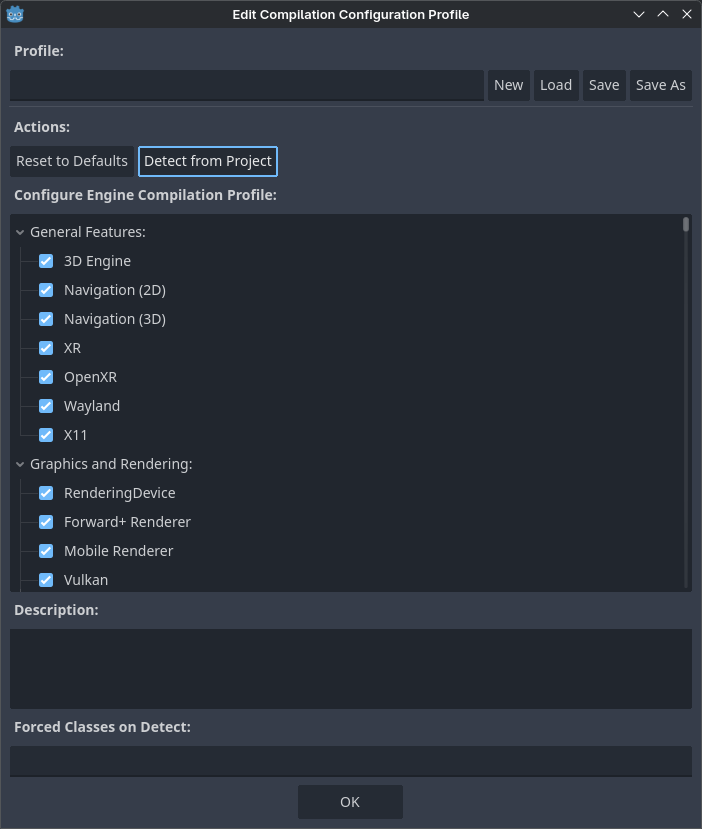

Sử dụng trình chỉnh sửa cấu hình biên dịch engine
Godot đi kèm một bộ lớn các tính năng có sẵn. Dù điều này rất tiện lợi, nó cũng có nghĩa là kích thước tệp nhị phân lớn hơn mức cần thiết, đặc biệt với những dự án chỉ dùng một phần nhỏ trong bộ tính năng đó.
Để giúp giảm kích thước tệp nhị phân, bạn có thể biên dịch export template tùy chỉnh với một số tính năng bị tắt. Điều này được mô tả chi tiết trong Tối ưu hóa kích thước bản build. Tuy nhiên, việc xác định những tính năng nào cần tắt có thể khá tốn công. Trình chỉnh sửa cấu hình biên dịch engine nhằm giải quyết vấn đề này bằng cách cung cấp một giao diện để xem và quản lý các tính năng này dễ dàng, đồng thời có khả năng phát hiện các tính năng đang được dùng trong dự án.
cho phép bạn tạo và quản lý các build profile cho dự án Godot của mình.
Từ đây, bạn có hai lựa chọn:
Xem danh sách và tự bỏ chọn những tính năng bạn không cần.
Dùng nút để tự động phát hiện các tính năng đang được dùng trong dự án và tắt các tính năng không dùng đến. Lưu ý rằng thao tác này sẽ ghi đè danh sách tính năng hiện có, vì vậy nếu bạn đã tự bỏ chọn một số mục, trạng thái của chúng sẽ được đặt lại dựa trên việc dự án có thực sự dùng tính năng đó hay không.

Mở Engine Compilation Configuration Editor
Khi bạn nhấp , bước phát hiện dự án sẽ chạy. Quá trình này có thể mất từ vài giây đến vài phút tùy kích thước dự án. Khi phát hiện xong, bạn sẽ thấy danh sách tính năng được cập nhật với một số tính năng đã bị tắt:

Danh sách tính năng được cập nhật sau khi dùng tính năng phát hiện (ví dụ từ bản demo 3D platformer)
Cảnh báo
Bỏ chọn tính năng trong hộp thoại này sẽ không trực tiếp giảm kích thước tệp nhị phân khi xuất (export). Vì chỉ có thể thực sự loại bỏ tính năng khỏi tệp nhị phân ở thời điểm biên dịch, bạn vẫn cần biên dịch export template tùy chỉnh với build profile được chỉ định để thực sự hưởng lợi từ trình chỉnh sửa cấu hình biên dịch engine.
Giờ bạn có thể lưu build profile bằng cách nhấp Save As ở phía trên. Build profile có thể được lưu ở bất kỳ vị trí nào, nhưng tốt nhất nên lưu ở đâu đó trong thư mục dự án và thêm vào hệ thống quản lý phiên bản để có thể quay lại khi cần. Điều này cũng cho phép dùng hệ thống quản lý phiên bản để theo dõi các thay đổi của build profile.
Build profile là một tệp JSON (với phần mở rộng .gdbuild) trông như sau sau khi phát hiện trong ví dụ trên:
{
"disabled_build_options": {
"disable_navigation_3d": true,
"disable_xr": true,
"module_godot_physics_3d_enabled": false,
"module_msdfgen_enabled": false,
"module_openxr_enabled": false
},
"disabled_classes": [
"AESContext",
...
"ZIPReader"
],
"type": "build_profile"
}
Tệp này có thể được truyền dưới dạng một tùy chọn SCons khi biên dịch export template:
scons target=template_release build_profile=/path/to/profile.gdbuild
Hệ thống build sẽ dùng tệp này để tắt các lớp không dùng đến và nhờ đó giảm kích thước tệp nhị phân.
Hạn chế
Chức năng dựa vào việc đọc các scene và script của dự án. Nó sẽ không thể phát hiện các tính năng được dùng trong những trường hợp sau:
Các tính năng được dùng trong GDScript được tạo theo thủ tục rồi chạy lúc runtime.
Các tính năng được dùng trong biểu thức.
Các tính năng được dùng trong GDExtension, trừ khi language binding cho phép khai báo các lớp được dùng và extension có sử dụng chức năng đó. Xem GH-104129 để biết chi tiết.
Các tính năng được dùng trong các PCK bên ngoài được tải lúc runtime.
Có thể tồn tại một số trường hợp đặc biệt khác. Nếu không chắc chắn, hãy mở một issue trên GitHub kèm theo một dự án tái hiện lỗi tối giản.
Xem thêm
Bạn có thể giảm kích thước thêm nữa bằng cách truyền các tùy chọn khác giúp giảm kích thước tệp nhị phân. Xem Tối ưu hóa kích thước bản build để biết thêm thông tin.